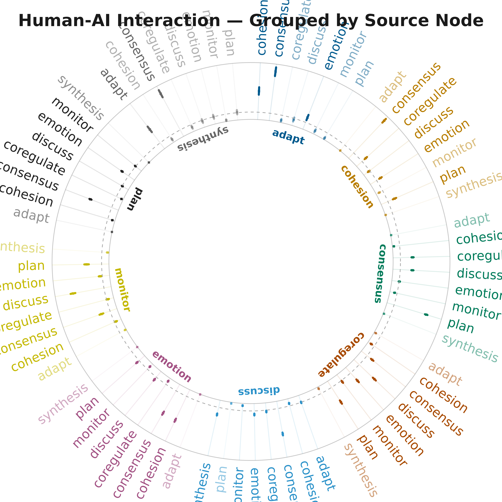

Plotting TNA Models with splot
Source:vignettes/articles/3_plotting-tna-models.Rmd
3_plotting-tna-models.Rmd1. Single TNA Model — group_regulation
Build a TNA model from the group_regulation dataset
(2000 sequences, 9 states).

2. Bootstrap Analysis
Run bootstrap resampling (1000 iterations) to assess edge significance and confidence intervals.
sig_edges <- boot$summary[boot$summary$sig, ]
cat(sprintf("Significant edges: %d / %d\n", nrow(sig_edges), nrow(boot$summary)))
#> Significant edges: 51 / 78
head(sig_edges[order(sig_edges$p_value), ], 10)
#> from to weight p_value sig cr_lower cr_upper
#> 5 discuss adapt 0.07137434 0.000999001 TRUE 0.05353075 0.08921792
#> 9 synthesis adapt 0.23466258 0.000999001 TRUE 0.17599693 0.29332822
#> 10 adapt cohesion 0.27308448 0.000999001 TRUE 0.20481336 0.34135560
#> 14 discuss cohesion 0.04758289 0.000999001 TRUE 0.03568717 0.05947861
#> 15 emotion cohesion 0.32534367 0.000999001 TRUE 0.24400775 0.40667959
#> 17 plan cohesion 0.02517460 0.000999001 TRUE 0.01888095 0.03146825
#> 19 adapt consensus 0.47740668 0.000999001 TRUE 0.35805501 0.59675835
#> 20 cohesion consensus 0.49793510 0.000999001 TRUE 0.37345133 0.62241888
#> 21 consensus consensus 0.08200348 0.000999001 TRUE 0.06150261 0.10250435
#> 22 coregulate consensus 0.13451777 0.000999001 TRUE 0.10088832 0.16814721
#> ci_lower ci_upper
#> 5 0.06380715 0.08001081
#> 9 0.20156075 0.26888806
#> 10 0.23990971 0.31203056
#> 14 0.04110513 0.05353159
#> 15 0.30902433 0.34318567
#> 17 0.02145591 0.02934643
#> 19 0.43274713 0.51731885
#> 20 0.47293205 0.52218913
#> 21 0.07575667 0.08881174
#> 22 0.11951905 0.14968376Bootstrap — Significant Edges Only
splot(boot,
display = "significant",
title = "Bootstrap — Significant Edges",
show_stars = TRUE)
Bootstrap — Full Network with Styling
Non-significant edges shown as dashed gray lines.
splot(boot,
display = "styled",
title = "Bootstrap — Styled (sig=solid, nonsig=dashed)",
show_stars = TRUE,
threshold = 0.02)
Bootstrap — Confidence Intervals
splot(boot,
display = "ci",
title = "Bootstrap — With Confidence Intervals",
show_ci = TRUE,
minimum = 0.05)
plot_bootstrap_forest(boot, layout = "grouped",
title = "Human-AI Interaction — Grouped by Source Node")
3. Simulated Group TNA + Permutation Test
Generate two group TNA networks then compare with permutation testing.
set.seed(123)
group_models <- group_tna(group_regulation,
group = c(rep("H", 1000), rep("L", 1000)))Plot Each Group
par(mfrow = c(1, 2))
splot(group_models[[1]], title = "Group 1", minimum = 0.05)
splot(group_models[[2]], title = "Group 2", minimum = 0.05)
Difference Network
cograph::plot_compare(
group_models[[1]], group_models[[2]],
title = "Group 1 vs Group 2 — Difference Network")
Permutation Test
set.seed(42)
perm <- tna::permutation_test(group_models[[1]], group_models[[2]], iter = 1000)
perm
#> # A tibble: 81 × 4
#> edge_name diff_true effect_size p_value
#> <chr> <dbl> <dbl> <dbl>
#> 1 adapt -> adapt 0 NaN 1
#> 2 cohesion -> adapt 0.00533 2.03 0.0529
#> 3 consensus -> adapt -0.00132 -0.764 0.417
#> 4 coregulate -> adapt 0.0112 1.99 0.0450
#> 5 discuss -> adapt -0.0962 -11.5 0.000999
#> 6 emotion -> adapt 0.00167 0.913 0.443
#> 7 monitor -> adapt -0.000192 -0.0351 0.946
#> 8 plan -> adapt 0.000771 0.942 0.241
#> 9 synthesis -> adapt -0.158 -4.83 0.000999
#> 10 adapt -> cohesion -0.0148 -0.381 0.699
#> # ℹ 71 more rowsPermutation Test — Network
cograph::plot_permutation(perm,
title = "Permutation Test — Significant Differences",
show_nonsig = TRUE)